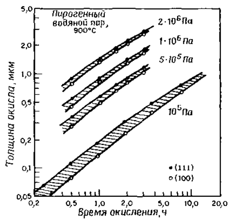
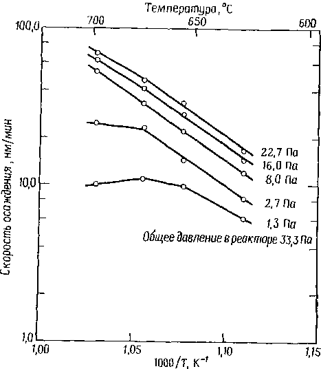
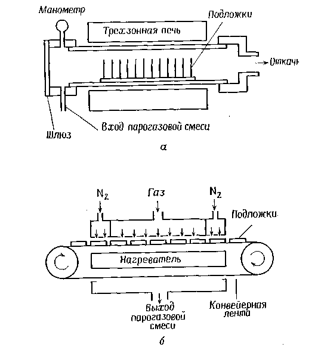
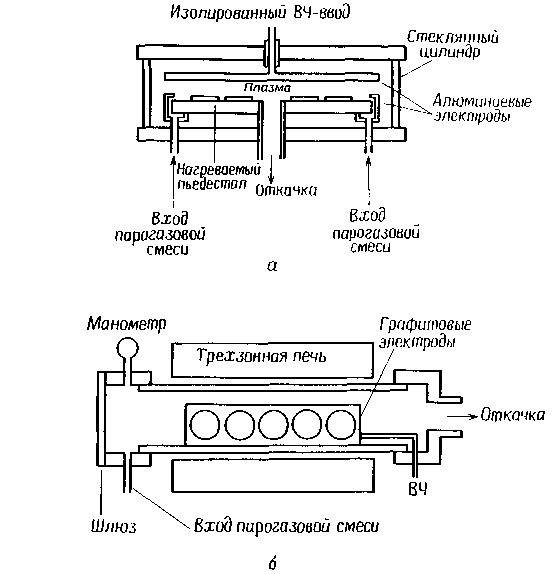

электронный
ресурс по учебной дисциплине 1-58 01 01 - "ИНЖЕНЕРНО-ПСИХОЛОГИЧЕСКОЕ ОБЕСПЕЧЕНИЕ ИНФОРМАЦИОННЫХ ТЕХНОЛОГИЙ"
|
||
| Оглавление | Программа | Теория | Практика| Контроль знаний | Об авторах | ||
|
Содержание
ТЕМА 4 ОКИСЛЕНИЕ КРЕМНИЯ. ОСАЖДЕНИЕ ДИЭЛЕКТРИЧЕСКИХ, ПОЛИКРИСТАЛЛИЧЕСКИХ И МЕТАЛЛИЧЕСКИХ ПЛЕНОК § 4.1 Методы окисления и оборудование § 4.2 Технология получения диэлектрических, поликристаллических и металлических пленок § 4.3 Технологическое оборудование для осаждения § 4.1 Методы окисления и оборудование Выбор метода окисления определяется необходимой толщиной и свойствами формируемого окисла. Относительно тонкие окисные пленки и те окислы, для которых поставлено условие получения минимального заряда на границе раздела, обычно выращиваются в сухом кислороде. Когда критичным параметром является содержание ионов натрия в пленках окисла, предпочтение отдается методу окисления в системе НС1 — О2. При формировании толстых окисных пленок (>0,5 мкм) используют окисление во влажном кислороде (как правило, при ~ 1 атм либо при повышенном давлении до 25 атм). Более высокое давление позволяет выращивать толстые окисные пленки при средних температурах и приемлемых затратах времени. Наиболее распространенный метод окисления при атмосферном давлении реализуется в кварцевых или кремниевых диффузионных трубах, где подложки кремния располагаются в вертикальном положении в пазах специальной подставки (лодочки), сделанной из кварца или кремния. Типичные температуры окисления лежат в интервале 800-1200 °С и должны поддерживаться в процессе окисления с точностью ± 1 °С для обеспечения однородности формируемых пленок. В стандартном технологическом процессе подложки подвергают очистке, сушке, размещают в лодочке и автоматически вдвигают в печь, нагретую до температуры 800-900 °С, после чего температуру постепенно повышают. Такое повышение температуры необходимо для предотвращения коробления подложек. По окончании процесса окисления температура в печи постепенно снижается и подложки вынимают наружу. Для того чтобы вырастить высококачественный окисел с воспроизводимыми свойствами, необходимо предотвратить попадание пылевидных частиц в рабочую зону печи. Раньше при вводе лодочки в печь и извлечении ее оттуда лодочка располагалась непосредственно на поверхности трубы либо применялась конструкция лодочки, снабженная катками. В любом случае при трении происходило образование пылевидных частиц. В настоящее время в новейших конструкциях используется консольное устройство: лодочка вводится в трубу, не соприкасаясь с ее стенками, и лишь потом опускается на поверхность трубы. Процедура извлечения выполняется в обратном порядке. Очистка подложек перед окислением. Перед помещением подложек в высокотемпературную печь необходимо провести их очистку для уничтожения как органических, так и неорганических загрязнений, появляющихся на предыдущих этапах технологического процесса или во время переноса подложек с одной технологической линии на другую. Если такие загрязнения не удалить, то возможно ухудшение электрических характеристик приборов, а также понижение надежности ИС. Пылеобразные частицы удаляют либо механической кистевой, либо ультразвуковой отмывкой. Ранее наиболее распространенными были методы очистки с погружением пластин в химические реактивы. К настоящему моменту разработаны методы с использованием центробежных струй, которые снимают имеющиеся на поверхности загрязнения. Процедура химической очистки обычно заключается в удалении органических загрязнений; ее проводят после удаления неорганических ионов и атомов. Обычная процедура очистки выполняется в смеси Н20-Н202-NH4OH, которая обеспечивает удаление органических соединений за счет сольватирующего действия гидроокиси аммония и окисляющего действия перекиси водорода. В этом же процессе может также происходить комплексообразование с участием некоторых металлов I и II групп. Для удаления атомов тяжелых металлов обычно используют раствор Н20-Н202-НС1. Повторное осаждение растворенных ионов тяжелых металлов в этом растворе предотвращается за счет формирования растворимых комплексов. Очистка в таком растворе проводится при температуре 75-85 °С в течение 10-20 мин, после чего следуют охлаждение подложек, их отмывка и сушка в центрифуге. Современные диффузионные печи (используемые также и для окисления) управляются с помощью микропроцессоров, которые обеспечивают необходимую последовательность процесса, осуществляют контроль температуры и расхода газов. Вся описанная ранее процедура, от загрузки подложек в лодочку до извлечения их оттуда, полностью программируется. Микропроцессорное управление обеспечивает обратную связь для сравнения величин различных параметров с заданными значениями этих же параметров и для введения соответствующих изменений. Например, при изменении расхода газового потока температура процесса может изменяться. Путем непосредственного цифрового контроля проводится сравнение этой температуры с заданным значением и необходимые изменения автоматически вводятся в систему нагрева. Окисление в сухом кислороде с добавлением и без добавления НСl и во влажном кислороде. Окисление в сухом кислороде как с добавлением, так и без добавления НС1 проводится в установках, управляемых микропроцессорами. В программу микропроцессора заложены такие параметры, как скорость введения и извлечения подложек из печи, температура процесса, скорость повышения и понижения температуры, а также расход газов. При работе с НС1 необходимо соблюдать осторожность, особенно в отношении системы очистки, поскольку НС1 способствует коррозии металлических частей оборудования. При проведении этих процессов необходимо также помнить, что небольшое количество паров воды может сильно повлиять на скорость окисления. Окисление во влажном кислороде при обычных условиях может проводиться пирогенным методом, при котором образование паров воды происходит за счет реакции Н2 и 02. Состав смеси Н2–02 контролируется микропроцессором. Пирогенный метод гарантирует получение паров воды высокой чистоты, что связано с высокой чистотой используемых газов. Если для окисления во влажном кислороде используется барботажный метод, то газ-носитель обычно пропускают через водяной барботер. вода в котором нагрета до 95 °С. Такая температура соответствует давлению водяных паров – 85*103 Па. Окисление при повышенном давлении. Параболическая константа скорости В прямо пропорциональна равновесной объемной концентрации окислителя в окисле С*, которая в свою очередь пропорциональна парциальному давлению окислителя в газовой фазе. Поэтому повышение давления водяных паров приводит к дополнительному увеличению скорости роста. Преимуществом окисления кремния при высоком давлении является также то, что этот метод позволяет выращивать слои термического окисла при относительно низких температурах в течение времени, сравнимого со временем, необходимым для обычного высокотемпературного процесса при атмосферном давлении. В связи с этим можно свести к минимуму процесс перераспределения предварительно введенной в подложку примеси. Проведение процесса при низкой температуре, кроме того, сводит к минимуму продольную диффузию, что имеет особое значение в свете современной тенденции снижения размеров формируемых приборов. Дополнительным преимуществом является устранение возможности образования окислительных дефектов. В случае проведения процесса окисления при высоких температурах повышенное давление значительно уменьшает время окисления.  Рисунок 4.1 – Зависимость толщины окисла от времени окисления подложек кремния с ориентацией поверхности (100) и (111) для пирогенного водяного пара при температуре 900º С и давления 2 Мпа В настоящее время как экспериментальное, так и промышленное оборудование приспособлено для проведения окисления при повышенном давлении для изготовления приборов. Например, описан процесс формирования быстродействующих биполярных структур с высокой плотностью компоновки элементов, в котором для создания окисной изоляции используется окисление при повышенном давлении. В МОП-технологии такой процесс успешно применен для выращивания толстых изолирующих окисных слоев при формировании динамических запоминающих устройств с произвольной выборкой. Перспективный метод окисления при повышенном давлении в настоящее время находит все более широкое применение. На рис. 4.1 показана зависимость толщины окисла от времени окисления во влажном кислороде при температуре 900 °С и различном давлении. Эти данные наглядно демонстрируют значительное ускорение процесса окисления при увеличении давления в системе. Анализ кинетики окисления при повышенном давлении усложняется в связи со следующими факторами: непрерывным увеличением давления в ходе его повышения до заданного; временными затратами, необходимыми для повышения давления; небольшими изменениями температуры в процессе повышения давления до заданного, а также по достижении этого давления на начальном этапе окисления; изменением парциального давления паров воды в процессе понижения давления и изменением толщины окисла от процесса к процессу и вдоль подложки. Для анализа данных, приведенных на рис. 4.1, была использована линейно-параболическая модель. Как пирогенные, так и барботажные системы могут обеспечить проведение процессов окисления во влажном кислороде при давлении до 2,5 МПа и температуре 1100°С. Для систем, использующих непосредственную подачу воды в окислительную камеру, отсутствуют проблемы, связанные с использованием водорода при высоких давлении и температуре. Однако при этом возникает необходимость строгого контроля за чистотой проведения процесса, поскольку качество используемой воды и средств ее подачи определяет качество водяных паров. В настоящее время на стадии разработки находится оборудование для выращивания окислов в сухом кислороде при давлении до 70 МПа. Окисление в плазменном разряде. Процесс анодного плазменного окисления предоставляет возможность выращивать высококачественные окисные пленки при еще более низких температурах по сравнению с теми, которые позволяет использовать метод окисления при повышенном давлении. Этот процесс обладает всеми преимуществами низкотемпературного процесса, а именно: ограничивает перераспределение примесей в предварительно сформированных диффузионных областях и подавляет образование дефектов. С помощью анодного плазменного окисления можно выращивать относительно толстые окисные пленки (порядка 1 мкм) при низких температурах (<600°С) со скоростью роста ~1 мкм/ч. Плазменное окисление — низкотемпературный процесс, проходящий в вакууме в тлеющем разряде чистого кислорода. Плазма формируется либо с помощью высокочастотного разряда, либо с помощью ионизирующего пучка электронов. При размещении подложки в области с однородной плотностью плазменного разряда и подаче на нее менее положительного потенциала по сравнению с потенциалом плазменного разряда происходит вытягивание из последнего и адсорбция на подложке активных заряженных частиц окислителя (кислорода). Скорость роста окисных пленок обычно возрастает с увеличением температуры подложки, плотности плазменного разряда и уровня легирования подложки. В настоящее время не существует достаточно полной теории механизма и закономерностей плазменного окисления. Пока не ясно, происходит ли рост окисла за счет миграции атомов кислорода внутрь подложки или за счет другого, более сложного механизма. Согласно одной из предложенных моделей, ионы кремния и кислорода и (или) их вакансии движутся через окисел в противоположных направлениях, причем движущей силой является приложенное через окисел электрическое поле. Преимущества плазменного окисления проявляются при локальном окислении, когда часть подложки может быть защищена маскированием от окисления. В качестве таких маскирующих покрытий могут быть использованы окись алюминия, окись магния и нитрид кремния, в которых методом фотолитографии сформирован топологический рисунок. Свойства окисных пленок, полученных плазменным окислением при температуре 500°С: скорость травления, коэффициент преломления, упругие напряжения, постоянный заряд в окисле, плотность поверхностных состояний и напряженность поля пробоя — сравнимы со свойствами термических окислов, выращенных при температуре 1100°С. § 4.2 Технология получения диэлектрических, поликристаллических и металлических пленок Химические реакции. В табл. 4.1 приведены основные реакции, которые могут быть использованы для осаждения пленок при формировании; приборов. Выбор конкретной химической реакции часто зависит от температуры осаждения, которая определяется с учетом, свойств материалов, входящих в структуру формируемого прибора, свойств осаждаемой пленки и определенными техническими аспектами процесса осаждения (производительностью оборудования, безопасностью и техническим обслуживанием реактора). Таблица 4.1. Основные реакции, используемые для осаждения диэлектрических и поликремниевых пленок
Наиболее часто для осаждения двуокиси кремния при формировании СБИС используют реакции окисления силана кислородом при температуре 400—450 °С, разложение тетраэтоксисилана при температуре 650—750 °С и реакцию дихлорсилана с закисью азота при температуре 850—900 °С. Легированные окислы получают при добавлении в реакционную камеру соединений легирующих элементов. Чаще всего для этих целей используются такие гидриды, как арсин, фосфин и диборан, так как процесс их получения и очистки хорошо освоен. Однако возможно применение галогенидов и органических соединений. Нитрид кремния получают реакцией силана с аммиаком при атмосферном давлении и температуре 700—900°С или реакцией дихлорсилана с аммиаком при пониженном давлении и температуре ~700°С. Плазмохимический нитрид кремния осаждается за -счет реакции силана с аммиаком или азотом в тлеющем разряде при температуре 200—350 °С. Эта реакция используется для пассивирования поверхности приборов, где более высокие температуры могут вызвать нежелательные реакции кремния с мет аллическнмн проводниками. Подобным образом в тлеющем разряде из силана и закиси азота получают плазмохимическую двуокись кремния. Поликремний осаждают пиролизом силана при температуре 600—650 С. Поликремний. Поликремний используется в качестве затвора в МОП-приборах, для формирования высокоомных резисторов, в качестве диффузионных источников при создании мелких р—n-переходов, для формирования проводящих дорожек и для обеспечения невыпрямляющих контактов к монокристаллическому кремнию. Поликремний осаждается путем пиролиза силана при температуре 600—650 °С в реакторах, работающих при пониженном давлении (рис. 4.4, а). Протекающая при этом химическая реакция выглядит следующим образом: SiH4 --> Si+2H2 Последующие технологические процессы при формировании поликремниевых затворов включают в себя легирование, травление и окисление. При создании некоторых специальных приборов осаждают второй слой поликремния. Этот слой может использоваться как материал контакта через небольшие окна, вскрываемые в изоляторе, или как перемычка между проводящими дорожками. Для нанесения поликремния обычно используют два вида процессов осаждения при пониженном давлении. В одном используется 100%-ный силан при давлении в реакторе 25— 130 Па. Другой процесс проводится при том же давлении, но с использованием 20—30%-ной смеси силана с азотом. Оба вида процесса позволяют одновременно обрабатывать от 100 до 200 подложек, а достигаемая однородность пленок по толщине составляет 5%. Скорость осаждения лежит в интервале 10— 20 нм/мин. Параметры процесса осаждения. Наиболее важными параметрами процесса осаждения поликремния являются температура, давление, концентрация силаиа и легирующей примеси. Такие параметры, как расстояние между подложками и количество подложек в реакторе, оказывают лишь незначительное влияние на процесс осаждения.  Рисунок 4.2 – Кривые Аррениуса для процесса осаждения поликремния при различных значениях парциального давления силана Как показано на рис. 4.2, скорость осаждения быстро возрастает с ростом температуры. Рассчитанная исходя из наклона кривой Аррениуса энергия активации процесса осаждения составляет —1,7 эВ (40 ккал/М), что несколько выше энергии активации процесса осаждения при атмосферном давлении. Разница обусловлена изменением интенсивности процесса десорбции водорода, являющегося продуктом реакции, и перераспределением основных ролей между процессами массопереноса и гомогенными реакциями в газовой фазе. Осаждение при пониженном давлении ограничивается температурами 600—650 °С. При повышении температуры более важную роль начинают играть химические процессы не на поверхности подложек, а в газовой фазе, что приводит к образованию рыхлого, беспорядочно осаждающегося слоя. Кроме того, при повышенных температурах происходит более сильное обеднение газовой фазы силаном, что сказывается на однородности толщины осаждаемого слоя поликремния. При температурах значительно меньше 600 °С процесс осаждения становится малоэффективным за счет резкого уменьшения скорости осаждения. § 4.3 Технологическое оборудование для осаждения диэлектрических, поликристаллических и металлических пленок Оборудование. На рис. 4.4 и 4.5 показаны четыре основных типа реакторов, используемых для процессов осаждения. На рис. 4.4, а представлен реактор с горячими стенками, работающий при поннженном давлении и используемый для осаждения поликремния, двуокиси кремния и нитрида кремния. Такой реактор состоит из кварцевой трубы, нагреваемой в трехзонной печи. Газовая смесь поступает с одного конца трубы и откачивается с другого. Действие механического насоса иногда усиливается вентилятором.  а — реактор с горячими стенками, работающий при пониженном давлении; б — реактор непрерывного действия, работающий при атмосферном давлении. Рисунок. 4.4 – Конструкции реакторов для химического осаждения из парогазовых смесей Давление в реакционной камере обычно составляет от 30 до 250 Па, температура 300—900 °С, а расход газа 100— 1000 см3/мин в пересчете на атмосферное давление. Подложки устанавливаются вертикально, перпендикулярно газовому потоку, в кварцевой лодочке. Одновременно в реакторах такого типа можно обрабатывать от 50 до 200 подложек. Для изменения динамики газового потока иногда применяют специальные обтекатели. Достигаемая однородность толщины пленок ±5%. Реакторы с горячими стенками, работающие при пониженном давлении, можно легко увеличить (в масштабе) для обработки подложек диаметром 150 мм. Основные преимущества реакторов рассматриваемого типа — превосходная однородность пленок по толщине, большой объем загрузки и способность обрабатывать подложки большого диаметра. К недостаткам относятся низкая скорость осаждения и частое использование ядовитых, легковоспламеняющихся или способствующих развитию коррозии газов. Рис. 4.5. конструкции реакторов плазмохимического осаждения: а — реактор с параллельным расположением электродов; б—реактор с горячими стенками.  Рисунок 4.5 – Конструкции реакторов плазмохимического осаждения: а — реактор с параллельным расположением электродов; б—реактор с горячими стенками На рис. 4.4,6 представлен реактор с непрерывной загрузкой, работающий при атмосферном давлении. Такой реактор используется для осаждения двуокиси кремния. Образцы проходят через реакционную зону на конвейерной ленте. Реакционные газы, протекая через центральную часть реактора, отсекаются от атмосферы газовыми занавесями, образованными очень быстрым потоком азота. Подложки нагреваются конвективным потоком. Достоинствами реактора с непрерывной загрузкой являются высокая пропускная способность, хорошая однородность пленок и возможность обрабатывать подложки большого диаметра. К недостаткам относятся большой расход газов и необходимость частой очистки реактора. На рис. 4.5, а представлен плазмохимический реактор с радиальным распределением газового потока. Реакционная камера представляет собой стеклянный или алюминиевый цилиндр, содержащий внутри два плоских алюминиевых электрода в верхней и нижней частях камеры. Образцы размещаются на заземленном нижнем электроде. Высокочастотное напряжение, подающееся на верхний электрод, создает тлеющий разряд между двумя пластинами. Газовый поток протекает через камеру в радиальных направлениях. Обычно его вводят через крайние области камеры и выводят из ее центральной части, хотя возможно и противоположное направление газового потока. смесь откачивается вентилятором Рутса, расположенным за механическим насосом. Нижний заземленный электрод нагревается до температуры 100—400 °С резистивным нагревателем или инфракрасными источниками излучения высокой интенсивности. Такие реакторы используются для плазмохимического осаждения двуокиси или нитрида кремния. Его главному достоинству — низкой температуре осаждения — сопутствуют три следующих недостатка. Емкость реактора ограничена, в частности в него нельзя помещать подложки большого диаметра. Подложки должны загружаться и разгружаться вручную, и, кроме того, возможно их загрязнение падающим сверху рыхлым осадком с ненагретых частей камеры. В плазмохимическом реакторе с горячими стенками (рис.4.5 б) устранены многие недостатки, присущие реактору с радиальным распределением газового потока. В таких реакторах процесс осаждения протекает в кварцевой трубе, нагреваемой в печи. Подложки устанавливаются вертикально, параллельно газовому потоку. Набор электродов, на которых крепятся подложки, представляет собой длинные графитовые или алюминиевые полоски. Сменные полосковые электроды подсоединены к источнику напряжения, создающему тлеющий разряд между электродами. Достоинства подобных реакторов заключаются в их большой емкости и низкой температуре осаждения. Однако при установке набора электродов в реакторе возможно образование отдельных частиц, которые в виде пылинок попадают на поверхность подложек. Кроме того, загрузка и выгрузка подложек в таких реакторах должна проводиться вручную. Обеспечение безопасности. Большинство газов, участвующих в процессах осаждения пленок, опасны и вредны для человека. Особенно остро проблемы обеспечения безопасности стоят для процессов осаждения при пониженном давлении, так как в этих процессах чаще всего применяются концентрированные газы. Например, при осаждении поликремния при пониженном давлении используется 100%-ный силан, а в том же самом процессе при атмосферном давлении— 3%-ная смесь силана с азотом. Когда в процессах осаждения при пониженном давлении применяются насосы, возникают дополнительные требования к обеспечению безопасности, потому что газы, участвующие в процессе, могут растворяться или реагировать с вакуумным маслом. Опасные газы разделяются на четыре основных класса: 1) ядовитые, 2) взрывоопасные, легковоспламеняющиеся или самовоспламеняющиеся, 3) способствующие развитию коррозии и 4) газы, опасные в смеси. В табл. 3.2 отражены отрицательные свойства основных газов, используемых в процессах осаждения из парогазовых смесей. Примерами опасных комбинаций газов могут служить смеси силана с галогенидами, силана с водородом и кислорода с водородом. Таблица 4.2. Свойства основных газов, используемых для осаждения из парогазовых смесей
Многие из легковоспламеняющихся газов реагируют с атмосферным воздухом, образуя при этом твердые частицы. Поэтому малейшая утечка газовых систем приводит к формированию таких осадков непосредственно в газовых линиях и к закупорке последних. Газы и продукты реакции могут также накапливаться в насосах, что представляет определенную опасность для лиц, обслуживающих эти насосы. Более детальное описание необходимых мер предосторожности при проведении процессов осаждения из парогазовых смесей можно найти в специальной литературе.
|
| (С) БГУИР |